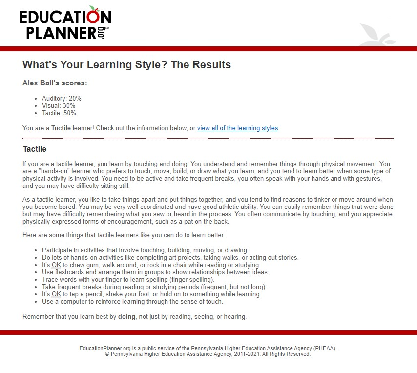
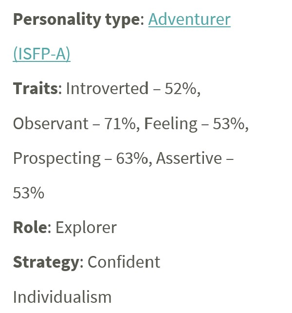
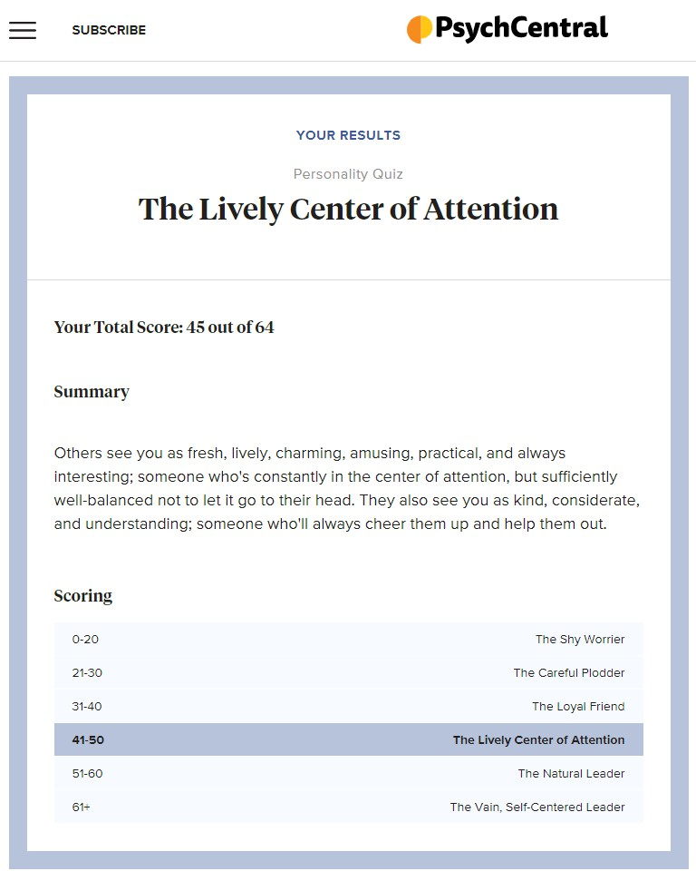

To build my profile, I completed 3 different online tests. I did the Myers-Briggs Test as well as the Education Planner’s Learning Style test and Psych Central’s Personality quiz. Each of these were distinctly different tests but I feel like they were all very simple tests. However, the results of all these tests agreed with what I already know about myself.
The education planner learning style test was one that I have done previously. My results were that I am a “Tactile” learner. This means that my best way of learning is to be hands on and that I learn things by doing. I have known this about myself for a long time. I have always learnt best by doing and I have implemented this in my current workplace. Whenever someone tries to teach me something I always ask if I can do it while they are showing me. Being a tactile learner means that I can struggle to learn things just by watching other people do things. In a group setting this means that I always try to be involved which can be both a good things and bad things at times. When we form teams, I think it will be good to have people that learn differently all in the same team so that no matter what we are learning/doing one of us will be able to keep up with the material. My only problem with this test is that it wasn’t very in-depth, I completed all the questions in under 3mins.
The 2nd test that I completed as apart of this profile is the Myers-Briggs test. This test is one of the most well-known tests that is used by employers. This test was a lot more in depth than either of the other two that I completed, and the most in depth of any personality test that I have ever done. The results of the Myers-Briggs test are broken down into 3 major parts: Type, Role and Strategy. My result for Type is that I am an ‘Assertive Adventurer’. Basically, this means that I enjoy trying new things as well as experiment with things. According to the report one of the strengths of an Adventurer are that they are sensitive to others. This is a plus in group work as it can be of assistance in conflict situations in helping to calm people down and lead to finding a compromise. However, being ‘Fiercely Independent’ is listed as one of the weaknesses of the Adventurer. This is both good and bad when it comes to teamwork, because your other teammates can have the confidence to know that you can work well by yourself when not together but on the flip side that it might be harder for them to come back into the group environment and work as a team.
The 2nd part of the results of the Myer-Briggs test is the role. My role was that of an explorer. According to the results an Explorer is quick-thinking and self-reliant. This means that they are great at working on their own and can be quick to sort a solution to a problem that might come up in teamwork. This is also a great result for someone who wants to enter the IT field as this is exactly what a potential employer would be looking for in someone that they want to be able to work off site/at home. The same as the result for the ‘Type’ this result can be both good and bad in team environments, you just need to be able to manage the issues that have potential to come up.
The final result of this test is the ‘Strategy’. My result that it generated from my answers was ‘Confident Individualism”. This gives a lot of the same answers as the previous results. That I prefer and am better at working alone. But it also states that people who end up with this result can have trouble being convinced of things when they have a strong opinion in the other direction. This could be another cause of friction within a team environment especially if there is someone within the group that is the same. The way around this would be to find a way to either agree to disagree or find a way to compromise as there is no way you would be able to get either completely change their opinions.
The last test that I took as a part building this profile was a Personality quiz through PsychCentral. This was a very basic test, but it still gave some interesting results. It gave me the result of ‘The Lively Centre of Attention’. This test’s results were vastly different from the Myers-Briggs and because of how quick it was and its lack of depth I don’t believe it to be nearly as accurate. It did however have a few notes that I agree with. It says that I am practical and understanding which is a great help when It comes to working in teams as it can help everything run smoother.
Overall, the results of these tests mean a lot and very little to me at the same time. They explain aspects of my personality that aren’t easy to see from just looking at yourself at your actions and will help me in the future to try and change how I do things when working with others. But at the same time, these outcomes are also things that sometimes can’t be changed as they are a massive part of who you are and trying to be something that you are not just make other people more comfortable isn’t possible for long periods of time and can lead to extra friction. These results can be important for teams and future employers, but also must be taken with a grain of salt as they are the be all and end all of finding out what type of person that someone is.